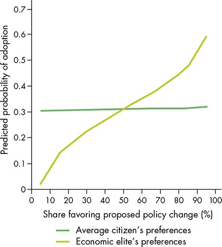

For the past four decades, China has been the world’s fastest-growing country. Meanwhile, it has lifted over 700 million people out of poverty. According to many commonly used indicators, China’s institutional environment during this period appears to have not changed. And yet these indicators fail to identify the deep changes to China’s policy arena that facilitated adaptive policy decisions and enhanced state capacity and thus enabled China’s economic and social transformation.
In China, the Communist Party of China (CPC) has been the sole governing party since 1949. Nevertheless, China has significantly increased contestability by gradually changing processes for leadership selection and collective decision making at both central and local levels. In the years following Deng Xiaoping’s 1980 assertion that “over-concentration of power is liable to give rise to arbitrary rule by individuals at the expense of collective leadership,” the CPC broadened horizontal accountability and institutionalized collective leadership through norms on leadership transitions, rules on selection and retirement, consultative decision making, greater party institutionalization, bureaucratic professionalization, and the introduction of village elections. The growth of state and party bureaucracies, as well as organized business and societal interests, combined with decentralized economic power, led to a proliferation of organizational bases with bargaining power (Lampton 1987). All these reforms reflected the incentives and preferences of those in power: broader accountability and a more rules-based space for contestability helped solve commitment and collective action challenges within the ruling elite and thus enhanced the stability of the ruling party during a period of tremendous change.
When powerful interests resist change, governance institutions that stunt inclusive development can persist. Yet history is rife with examples of countries that improved rules, institutions, and processes that constrained powerful interests and facilitated development progress. All of today’s high-income countries were once poor and had unaccountable governments. These countries sustained economic growth over long periods, while improving social welfare and preventing violence. Sustained inclusive growth was facilitated by evolving institutions and rules of the game that constrained arbitrary behavior by decision makers, enhancing contestation in policy making, and increasing the accountability of decision makers. Such changes have been accomplished using different institutional forms. Some countries have broadened accountability within dominant political parties or opened the space for contestation only in specific domains or at the local administrative levels; others have introduced free and fair competitive elections and broad corporatist consultative arrangements.
The institutions and rules these countries established facilitated nonviolent and equitable development. But why did these durable institutions develop? Changes to the rules of the game that determine policy formulation and implementation result from a bargaining process among elite actors acting in their own interests. Reforms that limit the arbitrary exercise of power today may be necessary for maintaining or enhancing power or providing insurance against a loss of power in the future. Formal institutions—moving from deals to rules—can enhance the credibility of commitments, overcoming coordination challenges and strengthening the stability of bargains among elites. In cases of long-term successful transformation, elite actors have adapted to changing circumstances by generating more capable, contestable, and accountable institutions. These institutions themselves helped enable further development.
Changes to the rules of the game that determine policy formulation and implementation result from a bargaining process among elite actors acting in their own interests.
The processes through which elite actors and the organizations that support them coordinate and commit to one another to determine outcomes can be thought of as elite bargains. Elite bargains are dynamic, constantly adapting to changes in the relative power, incentives, and preferences of elite actors. The development path is bumpy: shocks (such as terms of trade shocks and natural disasters) and gradual developments (such as urbanization or a growing middle class) alter elite power and preferences, often benefiting one group of elites at the expense of another. In the face of these changes, many deals-based bargains that cannot accommodate new actors or demands collapse. At other times, elite bargains successfully adapt to changes in the relative power, incentives, and preferences of societal interests by accommodating new demands through credible rules for elite-elite and elite-citizen interactions (see chapter 2).
Long-term development progress is predicated on this ability to adapt to changing circumstances. The institutional forms selected to solve commitment and collective action challenges at particular junctures in a country’s development may produce trade-offs: growth with higher inequality; more redistribution or less violence accompanied by lower long-term growth; successful growth episodes but with higher environmental costs; or growing levels of injustice or exclusion despite good growth outcomes. The introduction of contestability and accountability mechanisms can help countries adapt when tensions related to these trade-offs arise. When adaptation takes place through rules-based mechanisms, virtuous cycles of continued adaptation and development progress are more likely. However, the conditions under which such rules-based adaptation occurs are limited: in most of the world and most of human history unstable deals-based bargains have dominated.
Actors in the policy arena bargain over the design and implementation of policies and the definition of rules. Elites are those actors with the ability to directly influence outcomes within a given sector or issue. But identifying these elites can be difficult (box 7.1).
Box 7.1 Expert survey to identify elites
All social science disciplines and development practitioners recognize the importance of elite actors in determining development outcomes—from Aristotle and his “oligarchy” to early 20th-century “elite theorists” such as Mosca (1939), Pareto ([1927] 1971), and Michels ([1911] 1966), to recent grand theorists of economic and institutional coevolution such as North, Wallis, and Weingast (2009) and Acemoglu and Robinson (2012). The international donor community is looking increasingly at the consequences of different “political settlements,” which can be understood as the elite bargaining equilibria that emerge at critical junctures in a country’s development (Di John and Putzel 2009; Khan 2010; Parks and Cole 2010). And yet the set of conceptual research tools available to scholars of elite bargaining and to development practitioners remains limited, as does agreement on exactly who are elites.
To help fill this gap, the World Bank, in collaboration with V-Dem (Varieties of Democracy), conducted an expert survey, Measuring Elite Power and Interactions, to generate cross-national indicators that enable comparison of who holds power and how they wield this power (World Bank 2016b). The survey covers over 100 years of data in 12 countries across six regions. The data produced help to identify how the distribution of elites maps onto national power and the formulation and implementation of laws governing the exercise of power.
The survey reveals that the identity of the powerful elite actors who bargain over national policy decisions differs greatly over space, time, and issue area. For example, although national chief executives were part of the elite ruling coalition in all 12 survey countries in 2015, the other actors varied greatly in both number and representativeness (figures B7.1.1, panel a). With the exception of those in the Russian Federation, Rwanda, and Turkey, where the national chief executives monopolize decision making, the ruling coalition was quite varied. For example, in Bolivia the ruling coalition consisted of legislators, party elites, local governments, labor unions, and civil society organizations.
Figure B7.1.1 Elite actors within national ruling coalitions vary greatly across countries and over time
Source: WDR 2017 team, using data from World Bank and V-Dem 2016b.
Note: In this figure, relative strength is measured on a 0–4 scale, ranging from 0 (no power to influence decision making) to 4 (group has a lot of power to influence decision making on many issues). Panel a shows the number of elite groups that have a relative strength of greater than 3. For more information on specific variables and survey methodology, see World Bank and V-Dem (2016a) and Coppedge and others (2015).
Source: WDR 2017 team.
Ruling elites also differ within countries over time. In the Republic of Korea during the regime of Gen. Park Chung-hee (1963–1979), the bargaining strength of military actors, bureaucratic actors, and economic actors was relatively high (panel b). The post-1987 transition to democracy resulted in greater strength for new actors, particularly political parties, legislators, and the judiciary, but economic and bureaucratic actors remained highly empowered. By contrast, Brazil has experienced much more volatility in empowered elites, particularly before the 1990s (panel c).
This chapter focuses on national elites—those elites who have direct influence over the formulation and implementation of national policy, as well as the rules of the game by which national power is allocated, exercised, and constrained.1 Even at the national level, elites differ by sector: those with agenda- setting or veto control over health policy may not have control over constitutional reforms. At the national level, political (state) elites are of particular importance. However, formal political elites wield variable amounts of de facto power. In highly institutionalized countries, political power may flow from official positions, but in most countries—developed and developing alike—nonstate elites also directly influence bargaining outcomes. In the United States, a high- income institutionalized democracy, policies are much more likely to match the preferences of economic elites than the preferences of average citizens, despite a de jure commitment to equal representation (figure 7.1)—see Gilens and Page (2014). Elsewhere, relational or ideological informal power may trump economic or military might: in history, the de facto “power behind the throne” has often been a trusted adviser or counselor who lacked formal de jure powers.
Figure 7.1 Preferences of economic elites predict policy adoption more than citizen preferences in the United States

Source: Gilens and Page 2014.
Note: The analysis is based on 1,779 policies in the United States between 1981 and 2002 in which public opinion polls were carried out.
Organizations empower elites, help them overcome coordination problems, and enable them to credibly commit to one another. Elites differ in their capacity to organize: can they credibly commit to those they seek to influence and thus coordinate their behavior? Certain wealthy oligarchic elites may not depend on internal organization directly, but money is fungible, and it can buy collective action when necessary. For example, during periods of political unrest in Thailand economic elites paid “protestors” to occupy public spaces and demand a change in government (Winters 2011). Similarly, intellectual or charismatic leaders may become powerful elites because of their ability to generate large mass followings by shifting preferences. In this sense, elites are elite by virtue of their capacity to organize collective action and thus exercise influence (Mosca 1939; Mills 1956).
The use of an elite bargaining framework helps move beyond the black box view of the state. A state is not monolithic, but rather a reflection of bargaining outcomes among groups of empowered economic and political actors. All governments have some sort of power-sharing arrangement, regardless of their regime type (Bueno de Mesquita and others 2003). Even in regimes that seem to be dominated by one person, the ethnic composition of the ministerial cabinet is inclusive and proportional to the population, reflecting political bargaining rather than “Big Man” rule (Francois, Rainer, and Trebbi 2012). As they engage in elite bargains, actors have not only different degrees of relative power, but also different incentives and preferences.
For the broad sweep of human history, elites have bargained using deals-based mechanisms. The transition toward more rules-based governance is often thwarted by the incentives that elites face to maintain or maximize utility—be it wealth, influence, or reputation. Preserving or maximizing utility depends on preventing expropriation and exploitation by other powerful actors. But the ability of elites to credibly commit to not expropriating from one another is limited because of coordination and common agency challenges. This difficulty in establishing credible internal commitment tends to lead to unstable and nonadaptable short-term bargains. When elite bargains are deals-based, there is a natural tendency to keep coalitions small (Riker 1962). It is easier to coordinate preferences among a small group because bargains become less efficient with many actors (Mailath and Postlewaite 1990), and closer relationships make commitments more credible.
Commitment within the elite bargain may be credible because of the low threshold for small group coordination, but this credibility depends on maintaining the exclusivity of the bargain.2 Borrowing from the economic literature on oligopolies, when incumbent elites seek to prevent currently excluded (opposition) elites from entering the ruling coalition, they have three potential strategies: block (to prevent entry); deter (modify incumbent behavior to deter entry); and accommodate (allow other elites to enter and modify the behavior of incumbents and new elites). Despite a tendency for limited deals-based bargains, under certain circumstances elite bargains may expand and generate formal rules to help overcome collective action and commitment challenges, often to bring about effective deterrence or accommodation.
Most elite bargains are deals-based and “exclusive,” and they tend to resist adaptation. Bargains with few actors that are less open to external influences have less accountability, which can undermine future adaptability as new actors become powerful. The lack of adaptability of deals-based bargains helps explain why regimes in low- and middle-income countries are tenuous; they experience violent transitions every eight years on average (Cox, North, and Weingast 2015).
In states with deals-based bargains, the distribution of rents tends to be the glue that provides political stability and enables development (North, Wallis, and Weingast 2009). Commitment to distributing rents to those within the coalition may suffice to generate security and tie the state together, but such a state faces difficulties incorporating the new elites perhaps needed to generate growth and equity (see discussion on security in chapter 4). Indeed, these stable bargains can quickly deteriorate when the source of rents breaks down. For example, in South Sudan from the period of the Comprehensive Peace Agreement (CPA) in 2005 through the formation of the state in 2011, the distribution of rents held together heterogeneous factions and structured power relations that were reflected in patronage networks, including well-connected (but unproductive) “tenderpreneurs,” who survived on government contracts. However, these rents were unreliable, and undoing them proved difficult: a period of austerity in 2012–13 undermined South Sudan’s patronage-based elite bargain, making the country one of the world’s most fragile (Twijnstra 2015).
Under certain circumstances, however, elite bargains adapt to changing circumstances by improving state capacity and moving from deals-based agreements to formal rules-based mechanisms for contestability and accountability. In these bargains, elites institutionalize increasingly broad commitments to one another; they move from narrow deals to broad rules.
Elites adopt rules-based mechanisms for two general reasons: to sustain power or to provide insurance against a future loss of power. When actors who have been excluded become stronger, bringing these new actors into credible institutions and granting concessions may be less costly than repressing them. Similarly, expanding the formal accountability space may help provide internal commitments that facilitate agreement. As Tancredi says in The Leopard, “If we want things to stay as they are, things will have to change” (Tomasi di Lampedusa [1958] 2007, 40). When ruling elites are no longer confident of their hold on power, the introduction of rules may lower the future costs of losing power by providing “insurance.”
The introduction of rules-based mechanisms will coincide with elite self-interest only under certain circumstances. When the cost to ruling elites of losing power is high, they will be less inclined to increase the space for contestability and accountability and to cede power. If ruling elites believe expropriation or violent punishment will result from ceding power, they will reject electoral results that support the opposition (figure 7.2). The most important determinant of the cost of losing is the level of polarization between the preferences of elite groups; starkly opposed preferences raise the likelihood of violence and instability (Vu 2007). Similar or overlapping elite preferences—low levels of polarization—tend to facilitate coordination across different elite groups. When polarization is high, accommodating new groups becomes more challenging because the concessions may be too costly for the ruling elites. When elite polarization decreases, countries are more likely to institutionalize elite interactions and generate rules for contestation and accountability.
Figure 7.2 When the cost of losing power is high, elites are more likely to reject electoral results that support the opposition and are less likely to move toward rules-based contestability and accountability
Sources: WDR 2017 team, based on V-Dem 2015 and World Bank and V-Dem 2016b.
Note: The cost of losing power, the acceptance of election results by the losers, and institutionalized elite interactions are all measured on an ordinal 0–4 scale, as determined by an expert survey.
The context in which bargains take place also differs according to how much competition or political uncertainty the ruling coalition faces. This relates to both the contestability of access to decision making as well as the degree of internal cohesion in the ruling coalition. When ruling coalitions face competition or when they have only a weak hold on power, political uncertainty about who will be in power in a future period is high. Thus threats to losing power are credible.3 Uncertainty does not necessarily imply instability, but rather simply the unpredictability of who will hold power in the future. When uncertainty is high, ruling coalitions are more likely to implement reforms that will serve as insurance to protect them in the event of losing power. Alternatively, when uncertainty is low and ruling coalition elites are confident of their power, they may take a longer-term perspective and accommodate the demands of other elites through the introduction of new rules that can increase or sustain power.
The cost of losing power and the degree of political uncertainty interact to help determine the likelihood that elites will generate rules for contestability and accountability (box 7.2). Historical contingencies and specific country circumstances ultimately help determine outcomes, but a low cost of losing, and thus low polarization, may be a necessary condition for the emergence of bargains that adapt through the adoption of rules. The discussion that follows provides examples of institutions and rules that ruling coalition elites introduced to enhance power or insure against loss. In some cases, elites generate more capable states; in others, they expand the formal space for contestability and accountability. The concluding section of this chapter discusses when and why these rules persist through continual adaptation.
Box 7.2 When do elites have incentives to introduce rules for contestability and accountability?
The cost of losing power—largely determined by the polarization of elite preferences—and the degree of political uncertainty act together to shape elite incentives for introducing rules for contestability and accountability. There are four broad possibilities, considering the high and low values of these two dimensions:
• When uncertainty is high, elites may implement “insurance” reforms to protect themselves in the event of losing power (upper-left quadrant of figure B7.2.1).
Figure B7.2.1 The interaction between political uncertainty and the cost of losing power
Sources: WDR 2017 team, based on V-Dem 2015 and World Bank and V-Dem 2016b.
Note: “Political uncertainty” is calculated as the average of four variables, each ranging from 0 to 4: (1) elite cohesion in the ruling coalition, (2) elite ideological unity, (3) the relative strength of opposition elites, and (4) the de facto competitiveness of multiparty elections. The “cost of losing power” variable ranges from 0 to 4.
Source: WDR 2017 team.
• “Insurance” reforms are unlikely to happen, however, if the cost of losing is too high because in this case the commitments of one group of elites to another through either deals or rules are not credible. The result is frequently state collapse or a cycle of violence (upper-right quadrant).
• When uncertainty is low and ruling coalition elites are confident in their power, they may take a longer-term perspective and accommodate the demands of other elites through the introduction of new rules that can increase or sustain power (lower-left quadrant).
• When uncertainty is low but the cost of losing is high, repressive states may arise in which the preferences of the opposition elites are in stark contrast to those of the ruling elites. Repression sustains a large power imbalance between the ruling coalition and the opposition (lower- right quadrant). In this context, it is unlikely that credible rules to regulate contestation and accountability will be introduced.
Results from the Measuring Elite Power and Interactions Survey conducted for WDR 2017 offer empirical evidence to help demonstrate how the cost of losing and political uncertainty can change elite incentives to institute rules-based contestability and accountability. Figure B7.2.1 shows selected historical data points for three countries in the survey: Indonesia, the Republic of Korea, and the Russian Federation (which shows up as the Soviet Union from 1922 to 1991 in the data).
Indonesia in 1965 and the Soviet Union in 1917 lie in the upper-right quadrant: both the cost of losing and political uncertainty were high. In both countries, elite polarization was extremely high, and elite conflict became violent. Neither state had a ruling coalition willing or able to institute credible rules.
Both Indonesia and the Soviet Union slowly transitioned toward more stable repressive states (lower-right quadrant), one ruled by a dominant individual (Suharto in Indonesia) and the other ruled by a dominant political party (the Communist Party of the Soviet Union). Although both states generated economic growth and reduced political uncertainty, neither broadened contestability or developed strong institutions for accountability. When shocks hit and societal demands increased in Indonesia during the Asian financial crisis and in the Soviet Union in the late 1980s, neither system could adapt.
Korea during the presidency of Gen. Park Chung-hee was also highly stable and nondemocratic, but low elite polarization, identified by high degrees of elite cohesion across the political, military, bureaucratic, and business realms, reduced the potential cost of losing to the opposition elites, enabling the development of rules-based institutions (Campos and Root 1996). This institutionalization included broader space for civil society and the media and institutionalized interactions between business and the state.
Finally, over the last two decades both Indonesia and Korea have transitioned toward increased democratic competition. Korea has done so while maintaining low degrees of elite polarization. As Indonesia moved away from a personalistic system to more rules-based decision making, the winner-take-all mentality declined and reduced elite polarization. Both systems have experienced a turnover of political parties and the establishment of rules by outgoing parties that seek to tie their successors’ hands (to provide “insurance” for the outgoing elite’s eventual loss of power).
Over time, state capacity is largely a function of power; ruling elites invest in the capacity of governing structures when it is in their interest to do so—and they neglect those investments when it is not (see chapter 2). Such investments tend to improve institutional functions and development outcomes, but undertaking them is largely a problem of redistributing political power. Increasing the strength of bureaucratic actors is risky, creating the possibility of institutional champions that can contradict ruling elite preferences. And bureaucracies often serve purposes of patronage and rent distribution; undermining these arrangements is politically challenging and can destabilize elite bargains. Despite these challenges, elites may strengthen the state through bureaucratic and civil service reforms and party institutionalization in search of what this Report calls outcome legitimacy—that is, enhancing cooperation and coordination by delivering effectively on commitments.
Under certain conditions, broad administrative reforms that move from patronage to meritocracy may be possible. Although high levels of education and historically strong states may make meritocratic reforms easier, there are no foregone conclusions. Throughout postindependence Africa, individual capacity (education levels) increased while institutional capacity declined as civil service recruitment policies were placed under presidential authority, leading to politicization and deprofessionalization (van de Walle 2001). The Republic of Korea, often assumed to have a “Confucian tradition” of meritocratic civil service, actually undertook massive improvements in bureaucratic quality during the 1960s and 1970s. During the era of the country’s first president, Syngman Rhee, the bureaucracy was legally meritocratic, and yet between 1949 and 1961 only 336 bureaucrats passed the High Civil Service Examination, while 8,263 received “special appointments” (Cheng, Haggard, and Kang 1998).
Reforms to limit patronage frequently arise from top-down initiatives or elite accommodation (Grindle 2012). At times, broad meritocratic reforms may be initiated as part of an effort to strengthen the ruling coalition. In China during the late 1970s, the “Four General Principles” calling for more revolutionary, younger, more professional, and more educated cadres were both technically and politically effective: the reform improved bureaucratic capacity by increasing standards for education and professionalism. Including a “revolutionary” (geminghua) requirement made the reform difficult to oppose on ideological grounds, and introducing strict retirement ages at all government levels resulted in the mass retirement of uneducated older cadres, who often opposed economic reforms (Li 1998). With the rapid retirement of 3.4 million revolutionary veterans, it was found that 90 percent of the county-level and above government officials in office in 1988 had been appointed after 1982, and 60 percent of them had college degrees.
Although at times broad administrative reforms are possible, elites are more likely to direct scarce resources and political capital only toward those agencies that help achieve specific goals, resulting in uneven development capabilities. An elite bargaining framework can help explain the emergence of these bureaucratic pockets of effectiveness—public agencies that carry out agency objectives effectively despite existing in an environment in which most other agencies are ineffective and subject to predation (Leonard 2008). In these cases, influential elite actors have incentives to ensure the effectiveness of such agencies and use their own political capital to shield the organizations from external interference (box 7.3).
Box 7.3 Pockets of effectiveness in Nigeria
The emergence of “pockets of effectiveness” depends on political support from powerful elite actors. Taking steps to ensure the professionalization and autonomy of an individual government agency often precedes wholesale reform of the bureaucracy because political elites may seek effective management of a particular sector. High-level political interest in and commitment to an agency’s success and political insulation from other elites whose interests the autonomous agency may harm are essential for effectiveness. Agency autonomy is most likely to be supported when the agency provides benefits that are immediate, identifiable, and beneficial to an important group of elite actors who “have a conception of the state as a public good, rather than simply as a target of predation or a tool for gaining advantage over others” (Leonard 2008, 25). But autonomy and political support are not enough; bureaucratic pockets of effectiveness require adequate resources as well as managerial factors that support rational decision making, including meritocratic recruitment, internal discipline, and performance-based management.
Consider the National Agency for Food and Drug Administration and Control (NAFDAC) in Nigeria as an illustration of one such pocket of effectiveness (Pogoson and Roll 2014). The agency was created in 1993. In 2001 President Olusegun Obasanjo had a personal interest in combating counterfeit and dangerous drugs as a way to improve Nigeria’s international image. He wanted in part to seek debt relief, but also to boost his personal reputation and international prestige. He selected Dora Akunyili to head NAFDAC because of her reputation for incorruptibility. NAFDAC was then granted autonomy from the Ministry of Health to recruit staff and was given an independent budget. It was also allowed to operate free of political control. Under Akunyili’s leadership and Obasanjo’s direct support and clearance, NAFDAC returned to Nigerian ports, from which it had been banned in 1996, and NAFDAC clearance of imported goods again became compulsory, which broke the clearance monopoly of the Customs Service and plugged a major leak for imported counterfeit products. Challenging the interests of these powerful elite interests (the Customs Service) would not have been possible without agency autonomy and direct support of the president. In 2007 NAFDAC ranked first in a national poll of agency effectiveness (at 70 percent, it was 12 percentage points higher than the second-place agency).
Sources: Leonard (2008); Pogoson and Roll (2014).
Extending the state’s presence to new areas or gaining legitimacy through economic growth may be particularly compelling reasons for developing a noncoercive state capacity. For example, as states have realized they need to know the extent and makeup of their own population (increase “legibility”), they have increased investment in their statistical and census capacity (Scott 1998). In particular, economic goals may be essential for regime legitimacy. In Brazil under its military dictatorship, industrial promotion agencies were turned into islands of excellence to ensure growth (Schneider 1991). In Korea, General Park installed technocrats in ministries related to economic development, but filled nondevelopment ministries (such as home affairs, construction, and transportation) with military cronies (Kang 2002).
Often, the institution in which elite groups choose to invest resources is a political party. Chapter 8 looks at political parties as mechanisms for citizen collective action, but parties are also key channels to resolve coordination and commitment challenges among elites. Institutionalization constrains party elites from arbitrary decision making by increasing their accountability to party subordinates and constituents, thereby solving the internal commitment problem and making parties more effective (Panebianco 1988). Party institutionalization may facilitate collective action by supporters of the regime, helping to produce credible commitments and greater private investment by tying leaders’ hands (Gehlbach and Keefer 2012). In doing so, parties contribute to regime durability (Brownlee 2008). When parties become more institutionalized, other formal accountability mechanisms also tend to emerge (figure 7.3).
Figure 7.3 Horizontal and vertical accountability become more common as party institutionalization increases
Source: WDR 2017 team, using data from V-Dem 2015.
Note: The data are for 2000 and 2010 and cover 166 countries. All variables range from 0 to 1. Changes are calculated as the difference between 2010 and 2000 values.
In 16th-century France, jurist and political philosopher Jean Bodin advised absolutist French monarchs to voluntarily relinquish power, arguing that “limitations placed upon [a monarch’s] caprice markedly increase his capacity to govern and to achieve his steady aims” (Gandhi 2009, 186). Many elites have followed this advice, institutionalizing bargains among elites through greater contestability and accountability in order to increase and sustain power. Elites in these cases make concessions in order to enhance their own position. This can be done by co-opting newly powerful actors into formal institutional mechanisms for contestation (institutionalizing horizontal contestability) or by increasing horizontal and vertical accountability.
To maintain their own power, ruling coalitions may provide rising elites with payoffs or co-opt potential opposition by creating formal mechanisms to channel their preferences. To sustain coalitions, elites must provide their coalition partners with benefits. Despite a preference for keeping coalitions small, politicians may broaden coalitions when the potential for conflict arises (Riker 1962). Indeed, broadened coalitions help improve regime stability, although there are difficulties in quantifying this effect. In Africa, the addition of one cabinet member lowers the risk of a coup by 23–25 percent, all else being equal (Arriola 2009).
To maintain their own power, ruling coalitions may provide rising elites with payoffs or co-opt potential opposition by creating formal mechanisms to channel their preferences.
Broadening the bargaining arena by including new actors in the formal decision-making bodies of the state—institutional co-optation—may be cheaper and more sustainable than increasing payoffs. When rising elites are paid off instead of being included in decision making, systems may become overly dependent on the source of rents, making them unable to withstand shocks that undermine this rent source, as illustrated by the case of South Sudan described earlier in this chapter.
Ruling coalitions may be strengthened by bringing local or communal elites into the ruling coalition, often by co-opting existing informal institutions into more formal structures. Co-opting local elites rather than replacing them can increase the power of the ruling coalition. In Somaliland, the 1993 clan conference (shir beeleed) in the capital city of Borama brought together 500 elites from the modern and traditional sectors and institutionalized these clans and elders into formal governing bodies, a clan (beel) system that has led to 20 years of stability in a fragile region (Kaplan 2008). In Sub-Saharan Africa more broadly, when ruling authoritarian coalitions incorporated local authorities rather than replace them, these authoritarian incumbents had more support and were stronger during the democratic transition (Riedl 2014).
However, the participation of new actors is a two-way street: it mitigates conflict and creates “insiders” with incentives to support the ruling coalition, but in providing new actors with commitments, it also tends to empower these actors and the sectors they represent at the expense of the current elite, giving them the ability to influence policy formulation and implementation. Decision-making elites likely see co-optation solely as a means of staving off opposition demands rather than as a means of changing the balance of power within the arena. But both processes inevitably occur. Rising elites can in this sense be considered Trojan horses for expressing new demands internally.
Often, the co-opted parties are new economic interests that have grown more powerful over the course of development. The inclusion of business interests in formal institutions can lead to improved economic outcomes through more successful state-business coordination (see chapter 5 on growth). Formal rules for inclusion provide a credible commitment that noninstitutionalized efforts at coordination would not achieve. In Chile, President Augusto Pinochet’s co-optation of business elites to lead ministries and agencies during the 1980s arose out of fear that these elites would turn to the opposition. Their entry in the state led to systematic consultations with peak industries, benefiting business elites themselves while also improving coordination and strengthening the state beyond Pinochet’s rule (Silva 1996). In China, the Communist Party’s decision to add entrepreneurs to its ranks in the early 2000s signaled an increased commitment to the private sector, helping spur growth and also leading to further changes in regime policy and legal development, including constitutional change in 2004 that strengthened legal protection for private property.
Ruling coalitions may also introduce formal institutional “checks” on their behavior to maintain power and sustain rents. Consider the case of authoritarian legislatures. They are not mere window dressing; they provide a safety valve to vent political pressures, co-opt the opposition, signal regime strength, help regimes withstand leadership transitions, and distribute rents.4 However, authoritarian legislatures do not just serve the political purposes that spawn their creation; they can also lead to positive feedback loops. For example, the existence of legislatures in authoritarian regimes increases investment by raising the cost of expropriation (Wright 2008; Gandhi 2009), helping foster negotiations among private actors (Jensen, Malesky, and Weymouth 2014), and providing useful policy information that improves resource allocation (Boix and Svolik 2013).
The introduction of elections or electoral reforms may be a rational elite strategy to maintain power or privilege, particularly in the face of rising demands from opposition elites. When there are splits among elite actors, the introduction of vertical accountability mechanisms and responsiveness to citizens may enhance the power of one faction. For example, countries without elections at the national level may introduce local elections to appease local interests, gain information, and solve the principal-agent control problems of local elites by recruiting citizens to monitor local elites on behalf of the central elites. These local elections may strengthen the regime, but they also may lead to better social outcomes, as in the introduction of village elections in China (Martinez- Bravo and others 2011).
When bottom-up citizen movements (discussed in chapter 8) threaten elite interests, elites may introduce mechanisms to respond to societal demands before such pressures reach a tipping point. When asked “Why liberalize?” for example, the former president of Tanzania Julius Nyerere responded, “When you see your neighbor being shaved, you should wet your beard. Otherwise you could get a rough shave” (Levitsky and Way 2010, 16). In 19th- and 20th-century Europe, the extension of suffrage was predicted by the threat of revolution, proxied by revolutionary activity in neighboring countries (Aidt and Jensen 2014) and by strikes or riots in the home country (Kim 2007; Przeworski 2009).
Even without a direct threat from below, many democratic transitions are initiated from a position of strength to ensure maximum benefits for empowered elites. In a “conceding-to-thrive” scenario, the ruling coalition recognizes a future threat to the regime, but it maintains enough strength relative to the opposition to not fear losing an election (Slater and Wong 2013). It may be rational for elites to engage in democratization now in order to maintain power because the stronger ruling elites are during democratic transitions, the less the economic redistribution after transition (Albertus and Menaldo 2014). For example, in Spain after the autocratic Franco era, because the left had been undermined, conservative elites did not think that the advent of democracy would threaten property rights (Alexander 2002). In Latin America, economic elites allowed democratization when conservative parties were in charge and could protect their interests (Rueschemeyer, Stephens, and Stephens 1992).
Where elections are introduced to strengthen an elite bargain, electoral rules may serve to favor the continued dominance of those in power. Following democratization in post–World War II Japan, rural voters had twice the voting power of urban voters (Hata 1990). In Korea, Japan, and Taiwan, China, the combination of single nontransferable votes and multimember districts undermined the power of emerging parties by creating nationwide coordination challenges for smaller parties, which allowed the dominant parties to maximize legislative seats.5
Sometimes, ruling coalition elites, acknowledging threats to their continued dominance, introduce power-constraining rules that they hope will bind not only themselves, but also their successors. In particular circumstances, the adoption of cohesive and constraining institutions increases with the likelihood that the incumbents will be replaced (Besley and Persson 2011).
Sometimes, ruling coalition elites, acknowledging threats to their continued dominance, introduce power-constraining rules that they hope will bind not only themselves, but also their successors.
Although greater political competition may increase the likelihood that elites introduce binding rules, the credibility of these new rules depends critically on continued competition. When power imbalances grow between the ruling elites and opposition forces, rules may fail to bind. For example, in Bangladesh in the 1990s equal power between the ruling and opposition parties led to a constitutional amendment in 1996 that called for establishment of a neutral caretaker government at the end of each term, headed by the last Supreme Court chief justice, to facilitate rules-based transitions. This constitutional arrangement collapsed in 2007 when the ruling Bangladesh Nationalist Party (BNP) interfered with Supreme Court retirement dates, resulting in a violent standoff (Khan 2013).
Competition among elites helps explain the emergence of horizontal checks and autonomous institutions in new or weak democracies. Competitive systems facing political uncertainty are more likely to adopt independent judiciaries because the current ruling elites know they will be better off subject to independent actors than to the machinations and retaliations of political rivals. For example, although Argentina’s ruling Peronist party agreed as early as 1994 to strengthen an independent judiciary, such reforms were not implemented until the Peronists thought they would lose power, at which point judicial independence was granted in order to control the opposition after ceding power (Finkel 2004).
Other judicial reforms, including judicial review, also become more common when greater competition increases the likelihood that the ruling coalition elites will lose power. In new democracies, the constraint on arbitrary power imposed by judicial review can serve as insurance to potential electoral losers, providing support for democracy, as was the case during democratic transitions in some East Asian democracies such as Korea and Mongolia (Ginsburg 2003). The adoption of constitutional review in 204 countries from 1781 to 2011 was driven largely by electoral politics, which served as political insurance when the ruling party was in jeopardy (Ginsburg and Versteeg 2014).
The same logic applies to accountability, oversight, and transparency laws. In eastern European economies in transition in the 1990s, governments were less likely to extract resources from the state when political competition was high, and they were more likely to introduce institutions of accountability and oversight, particularly those related to civil service, accounting, and anticorruption (Grzymala-Busse 2006). In Brazil, audit courts are more effective in localities with a greater turnover of elites (governors) because these localities have delegated authority to independent auditors as an insurance mechanism (Melo, Pereira, and Figueiredo 2009). Fiscal transparency ties not only the hands of current elites, but also those of successors (Alt, Lassen, and Rose 2006). This is consistent with the actions of certain states in Mexico. Although access to information and transparency laws were strengthened at the federal level after the political change in 2000, and more recently in 2016, such laws were more likely to be passed at the state level when opposition parties were stronger and when there was greater executive office turnover (Berliner and Erlich 2015).
Elites sometimes introduce elections from a position of strength; at other times, they may do so to insure themselves against exploitation by other elites. Movements toward democracy may result as new economic elites seek to safeguard (ensure a commitment to) their new position and wealth. Under authoritarian regimes, the commitment to protect resources and property is often weak.6 Broken commitments can lead empowered economic elites to part ways with the ruling coalition and support the democratic transition because they view it as more likely to prevent further exploitation.
When elites introduce elections as a way to insure themselves against exploitation by other elites, the electoral rules are also likely to reflect the interests of these declining powers. When power is weakened, manipulation of the terms of democratization can serve as a source of political insurance. During República Bolivariana de Venezuela’s democratic transition in 1958, the three main political parties signed the Punto Fijo Pact, which not only established respect for constitutions and elections, but also determined that electoral winners should put members of all three parties into positions of power to create national unity governments (excluding the Communists). The pact helped ensure the survival of democracy, but also made outcomes less likely to reflect the will of the people (Myers 2004).
In the examples just discussed, elites enhanced state capacity or introduced rules to manage contestation and increase accountability to adapt to changes spurred by the development process that affected the relative power, preferences, and incentives of actors (see part I of this Report). Such adaptation is essential for long-term development.
Adaptation is not a one-off trait. Rather, it is a continual process as the needs and demands of society change over the course of development. At low- income levels, deals may be sufficient to overcome elite coordination and commitment challenges; patronage can effectively provide credible commitment and give the elite ruling coalitions cohesion. At middle-income levels, however, rising societal demands make the transaction costs of coordinating interests greater, potentially undermining deals-based bargains. This situation helps explain why low-income countries that are successful in terms of medium-term economic growth tend to not have governments that are appreciably cleaner than those of comparator countries, whereas upper-middle-income countries that grow to high-income levels experience a sharp decline in perceived corruption relative to those countries that remain at the middle-income level. They also experience greater increases in horizontal and vertical accountability (see spotlight 6 on the middle-income trap).
Adaptation is not a one-off trait. Rather, it is a continual process as the needs and demands of society change over the course of development.
Bargains that can adapt to accommodate evolving elite interests may nevertheless struggle to adapt to growing citizen demands. Many countries experiencing spells of rapid growth have engaged in rights violations, particularly of student and labor organizations, as a way to support the interests of the state, bureaucratic, and business elites in the ruling coalition (Leftwich 1995). In these cases, the tensions between growth outcomes and equity outcomes and between legitimizing outcomes and legitimizing processes have increased. Regimes may be delegitimized when decision-making processes are insufficiently inclusive, even when other development outcomes appear successful—that is, process legitimacy may become more important than outcome legitimacy. As discussed in part I of this Report, cooperation and coordination—collective action—are weakened as a result of a “legitimacy deficit.”
Overcoming delegitimization requires greater inclusion in the political process. As elite ruling coalitions grow in size, coordination difficulties increase, elite splits become more likely, and the space widens for citizen groups to enter. Here, the interaction between citizens and elites becomes key, particularly in the development of social movements. When bureaucratic interests diverge from political interests, for example, they may attempt to organize citizens in their support. But this co-optation of citizens follows the same logic as the institutionalized co-optation of other elites: once citizens gain a seat at the table, vertical accountability increases and citizen interests are articulated and reflected in elite bargains. The interaction between elites and citizens is thus a two-way dynamic with both sides playing decisive roles—elites in seeking citizen support and opening up new spaces for contestation and citizens in organizing to overcome collective action problems and apply pressure on elites, as discussed in chapter 8.
Adaptation is necessary for long-term development, but most elite bargains cannot be adapted. Adaptability in elite bargains requires feedback mechanisms, as well as an ability to accommodate rising and falling powers. The free flow of information and greater freedom of association make such accommodation more likely. Many of the reforms described earlier are complementary and make further reform more likely, leading to a virtuous circle. For example, many reforms that tie the hands of elites are embodied in new organizations, including independent bureaucracies, anticorruption agencies, and legislatures. The actors in these organizations can then directly contest in the policy bargaining arena. Stronger organizations want institutional improvements that support themselves, leading to a self-reinforcing virtuous circle (North, Wallis, and Weingast 2009).
Adaptation is necessary for long-term development, but most elite bargains cannot be adapted. Adaptability in elite bargains requires feedback mechanisms, as well as an ability to accommodate rising and falling powers.
Many of the reforms described earlier also tend to lead to further adaptation because the degree of institutionalization of the policy bargaining arena itself influences the level of uncertainty and the cost of losing. The rules that govern formal bargaining by elites help them overcome common agency problems and also provide the structure for repeated interactions that can lead to credible commitments. Credible institutions can lower the costs of losing by tying the hands of competing elites, thereby lessening polarization and making change more likely. Conversely, informal patrimonialism pushes regimes to resist democratic reforms because the costs of transition are higher (Bratton and van de Walle 1997).
Although the conditions that determine whether elites will adapt through rules are historically contingent and highly context-specific, there are a few circumstances in which such adaptability becomes more likely: when elites have exogenous reasons to find common ground; when national institutions produce leaders who effectively shape the incentives and preferences of other elites; and when countries have more balanced, diversified, and organized business interests. These circumstances are discussed in the sections that follow.
When elite preferences converge and polarization decreases, coordination and cooperation become less challenging. Often, there are exogenous reasons for such reductions in polarization. External threats or internal threats from nonelites increase the fusion between ruling and opposition elites. When citizens are united against elite interests, the opposition and ruling coalition can more easily find common ground—the cost of losing to the opposition becomes smaller. In Southeast Asian countries that feared class revolution, elite groups with opposing class and ethnic backgrounds made “protection pacts” with one another to resist mass mobilization (Slater 2010). For example, in Malaysia the threat of urban communists enabled ethnic Chinese businesses to unite across ethnic and ideological lines with traditional Malaysian elites.
Polarization can also decline through shared ideologies and shared experience. When elites share an ideology, they can more readily solve internal collective action challenges, enhancing cohesion and making rules-based bargains more viable (figure 7.4). Shared military and revolutionary backgrounds help to explain the cohesion and long-term stability of Mexico’s Institutional Revolutionary Party (Partido Revolucionario Institucional, PRI) and China’s CPC (Knight 1992). Shared schooling can achieve similar outcomes. Public schooling with nationally determined curricula can generate a national identity that may help overcome underlying schisms. However, education can also increase polarization; ideologically diverse societies may prefer school choice, which can result in greater ideological and cultural segmentation over time (Kremer and Sarychev 2000).
Figure 7.4 Greater ideological unity among elites is associated with greater cohesion of the ruling coalition, as well as more institutionalized elite interactions
Sources: WDR 2017 team, based on V-Dem 2015 and World Bank and V-Dem 2016b.
Note: All variables are ordinal and range from 0 to 4, based on expert survey responses. The charts plot nonoverlapping decadal observations for 12 countries.
Specialized “elite” schools may be able to reduce the polarization of elite preferences and facilitate bargains. In Somaliland, elite secondary schools played a crucial role in generating a unified leadership; the highly selective Sheekh Secondary School, which enrolls only 50 students a year, includes students from all clans and has produced three out of four presidents and numerous vice presidents and cabinet members. According to one graduate, “The graduates of Sheekh School have had a huge influence on Somaliland, on its development, its politics. … Elite leadership was trained in us there” (Phillips 2013, 70).
Effective leadership can change the parameters of elite bargains. In an elite bargaining framework, the importance of leaders is not in selecting the “right” policy, but in spurring new ways in which organizations can interact (Andrews 2013). Leaders are instrumental in determining outcomes by solving coordination challenges or by transforming the beliefs and preferences of followers (Ahlquist and Levi 2011). The ability to solve coordination challenges corresponds with a “transactional” role for leaders.7 Using an array of bargaining tactics and strategies, these leaders coordinate among elite actors to overcome common agency problems and reach positive sum (win-win) outcomes. They also may change the incentives of other elites, taking into consideration who wins and who loses over time (the intertemporal dimensions).
Transactional leaders, by means of “good politics,” can reduce the polarization of elite preferences without shifting norms. In the United States, Lyndon Johnson, as Senate majority leader before becoming president, pushed through the Civil Rights Act of 1957 despite resistance from the opposition as well as the anti–civil rights southern bloc of his own party. By taking personal risks to force a resolution, he overcame a natural tendency of Congress to avoid risk (Schofield 2006). And he did this less by changing beliefs than through good politics, including deals, trades, threats, and ego stroking (Caro 2002).
By contrast, “transformational” leaders can change elite preferences or gain followings by shaping preferences. They are entrepreneurial in coordinating norms and can effect large changes in society by changing the environment in which politics is played out, often by reducing the polarization of elites. Lyndon Johnson would not have been able to push through the more far-reaching Civil Rights Act of 1964 had not the Reverend Martin Luther King Jr. and his fellow civil rights activists successfully shifted the contours of the conversation on race, nonviolence, and human rights in the United States through self-sacrifice, nonviolent struggle, moral courage, and oratorical brilliance.
Transformational national leaders can indelibly alter the nature of the policy arena and the state itself. Perhaps most notably, ideological nation-building efforts can create political and social stability and identity that can lead to greater trust, cooperation, and commitment to ethnically neutral policies (Gellner 1983). In Tanzania, Julius Nyerere’s “extended family” (ujamaa) socialism served as the ethnically unifying basis for national development. Although economic development did not improve initially, mass compulsory education and the widespread use of Swahili helped overcome tribal cleavages and produce a more unified and stable state. In Indonesia, President Sukarno introduced the Five Pillars (Pancasila) to unite disparate elements of society during the process of state formation. The concept survived a military coup as well as the transition to democracy, helping to maintain a coherent national state during destabilizing times (Fukuyama 2014).
National institutions help determine leader quality both through selection (ex ante accountability) and punishment (ex post accountability)—see Maskin and Tirole (2004). When subsets of the population—such as women (see box 7.4)—are excluded from leadership positions, competitive selection is less likely to produce effective leaders. In democracies, political leaders must be elected, and local competition can prove a fertile ground for demonstrating capacity for higher office (see spotlight 9 on decentralization). Regardless of whether citizens or a small elite elect or select leaders, transparency and information provision are critical for screening good candidates (see chapter 8).
Box 7.4 Female elites and female leaders
When half the population is excluded from leadership competition, the political processes are half as likely to generate good candidates. Although gender gaps are narrowing around the world in several domains, female elites remain underrepresented. The proportion of seats held by women in national parliaments is 22.5 percent worldwide; in the world’s largest 200 companies in 2014, women accounted for only 17.8 percent of members of boards of directors; and the average share of female justices in constitutional courts worldwide is 22.4 percent.a Even when women do gain positions of power, they are often constrained. For example, when women are appointed ministers (in a sample of 117 countries worldwide), they are largely assigned to less strategic and more “feminine” policy areas (Krook and O’Brien 2012).
The lack of female elite representation has negative effects on the introduction of inclusive policies (see chapter 6) because the preferences of female leaders may be systematically different from male preferences. In the context of elite bargaining, female leaders are also more likely to engage in inclusive decision-making processes. In the United States, female city managers are more likely to take citizens’ inputs into account in decision making (Fox and Schuhmann 1999); female mayors tend to favor cooperation rather than a hierarchical approach to governing (Tolleson-Rinehart 1991); and female chairs of state legislature committees act more as facilitators in committee hearings than do male chairs, who instead use their power to control the direction of the hearings (Lyn 1994).
There is also evidence that female leaders are less prone to patronage politics and corruption. In Africa, women are less likely to become ministers in settings in which incumbents use patronage to support ethnic constituencies (Arriola and Johnson 2014). In India, the 1993 constitutional amendment that mandated the reservation of one-third of local government council positions for women also reduced the incidence of corruption (Beaman and others 2011). In Brazil, random audits of government administrations showed that female municipal mayors were less likely than male mayors to be corrupt and were also less engaged in patronage (Brollo and Troiano 2016). More broadly, countries with a higher representation of women in parliament have lower levels of corruption (Dollar, Fisman, and Gatti 2001).
Source: WDR 2017 team.
a. Data are from the World Bank, World Development Indicators (database); Globe Women, Corporate Women Directors International; and World Bank, Women, Business and the Law (database).
For leaders to be effective, they must be not only well-meaning, but also constrained by strong norms or formal institutions, including parties and legislatures (Ezrow and Frantz 2011). Term limits can encourage party-based decisions rather than personalistic decisions, as well as the cultivation of successors (Ginsburg, Melton, and Elkins 2011). Term limits also help with informal coordination by signaling to rivals. Even in autocratic settings, higher leadership turnover is associated with more successful economic and human development (Besley and Kudamatsu 2007).
Economic conditions help determine the adaptability of elite bargaining. Where productive business interests dominate, ruling coalitions are likely to be more dynamic and adaptive; where monopoly interests dominate, policies are more likely to prevent the emergence of new economic elites. Concentrated economic power makes adaptability to external shocks and internal change less likely, with important political consequences. More concentrated economic power tends to lead to concentrated political power that reflects this economic distribution. And when economic power translates into political power, institutions of accountability are less likely to develop (figure 7.5). For this reason, reforms that concentrate economic power without institutions in place to deal with new powerful interests may be ineffective, as in many postcommunist countries, where the initial beneficiaries of market reforms became economically and politically powerful enough to block further reform (Hellman 1998).
Figure 7.5 When economic power maps onto political power, there are fewer institutional checks on power
Source: WDR 2017 team, using data from V-Dem 2015.
Note: The figure maps the association between economic and political power. The analysis is based on data for 170 countries in 2012. The variable indicating how economic power maps onto political power is from V-Dem, based on expert surveys. A score of 0 means that economic elites have a monopoly on political power; a score of 4 means that all citizens have equal power, regardless of economic position.
When diverse productive interests gain in strength because of external shocks and internal change, they can improve elite bargains. For example, in the conflict between the English Parliament and the monarchy during the 17th-century civil war, traders provided parliamentary moderates who lacked mercantile interests with financial assets and company shares, creating a broad parliamentary majority that overcame monarchic rule and changed the mechanisms by which Parliament operated (Jha 2015).
Business associations can help diverse business interests overcome collective action problems and gain influence in elite bargains. They can push for institutionalized consultations that can enhance coordination and decrease elite polarization. Chile’s movement from particularistic state-business relations in the 1970s to peak business association consultations in the 1980s improved economic efficiency, and by aligning the interests of political insiders and business elites it helped pave the way for a smoother democratic transition (Silva 1996). Business associations can also act to balance the power of entrenched political elites. In Korea, the nature of empowered businesses led to a form of business-state collusion that was pro-development, in contrast to business- state relations in the Philippines that tended to be much less conducive to broad-based development (Kang 2002). In these cases, the key to effective business associations is the representation of diverse interests: when business associations represent a diversity of interests, they are more inclined to push for universalistic rules and institutional reforms (Maxfield and Schneider 1997).
How can a deeper understanding of elite bargains point to entry points for change? First, changes in the rules of the game in the policy arena are driven by the relative power of self-interested actors. Trying to impose reforms for contestability or accountability is not likely to gain traction. This chapter focuses on national elites, but the same analysis could also consider the subnational level and agency-specific reforms. In all of these cases, reform of the rules by which actors interact can succeed only when the rules reflect the actual distribution of power and interests. Rules that do not reflect this power distribution or change this power distribution will not stick.
Second, under certain circumstances elites do choose to tie their own hands, so there is room for optimism. Trying to create these circumstances by altering incentives, preferences, and contestability at the margins may be an effective way to help change rules. Although there are few entry points, there are ways to facilitate this process and support development of homegrown rules:
• Effectively change the incentives of elite actors. Even when the relative power of actors remains the same, the nature of elite bargains can change when the elites in power face changed incentives, often as a result of shocks or gradual processes of economic development. Economic diversification can undermine rent-based elite bargains, changing the incentives of ruling elites to support more broad-based policies. Effective transactional leaders can engage in “good politics” to change the incentives facing other elites in the policy arena. When citizens overcome their collective action challenges to pressure elites, they change the incentives of elites to respond to their demands (see chapter 8). External actors can help change elite incentives when they present inducements or threats, such as conditional development assistance or the possibility for membership in the European Union or World Trade Organization (see chapter 9).
• Reshape preferences in the policy arena. The nature of elite bargains can also change when actor preferences evolve. Often, changes in preferences occur slowly over extended periods, such as global trends over centuries to view the practices of slavery and torture as immoral. In the shorter term, transformational leaders can coordinate norms and change beliefs. Increasing the frequency and depth of interactions between elite actors can help them find common ground. And more cross-border flows of ideas and information can change the preferences of domestic actors through the diffusion of norms and interactions between communities of experts (see chapter 9).
• Make the policy arena more contestable. When more actors are allowed to contest in the policy arena, elites are more likely to move from limited deals-based bargains to broader rules-based bargains. When newly powerful elites are allowed to contest in formal institutions, bargains can adapt to the changing balance of power. Empowering agencies by increasing their resources or the technical skills, information, and data available to them can enable them to bargain more effectively. And helping groups of elites or citizens overcome collective action challenges can also lead to newly powerful actors who can directly influence the policy arena. Chapters 8 and 9 discuss the potential influence of other actors (citizens and international actors) to change the nature of elite bargains.
1. The same analysis could also consider the subnational level and agency-specific reforms.
2. This leads to the “limited access orders” described in North, Wallis, and Weingast (2009) and the “extractive” political institutions described in Acemoglu and Robinson (2012).
3. This can happen in both autocratic and democratic settings. In autocracies, elites face a “dictator’s dilemma”: their hold on power is tenuous, and they usually are overthrown from within (Svolik 2012). In democracies with significant oppositions, voting regularizes (institutionalizes) uncertainty because a change of administration entails a loss of power for incumbents.
4. For safety valves, see Malesky and Schuler (2010); for co-optation, Gandhi and Przeworski (2006), Langston (2006), and Gandhi (2009); for signaling, Geddes (2005); for leadership transitions, Ezrow and Frantz (2011); and for rent distribution, Lust-Okar (2006).
5. Brady and Mo (1992); Cox and Niou (1994); Cox (1996).
6. From 1950 to 2002, the majority of Latin American countries under an autocracy engaged in at least one large-scale expropriation of private finance, land, or natural resources (Albertus and Menaldo 2012).
7. For the distinction between transactional and transformational leaders, see Burns (1978).
a. References to titles of publications that include Taiwan, Hong Kong, and Macau/Macao refer to the regions Taiwan, China; Hong Kong SAR, China; and Macao SAR, China, respectively.
Acemoglu, Daron, and James A. Robinson. 2012. Why Nations Fail: The Origins of Power, Prosperity, and Poverty. New York: Crown Business.
Ahlquist, John S., and Margaret Levi. 2011. “Leadership: What It Means, What It Does, and What We Want to Know about It.” Annual Review of Political Science 14 (1): 1–24.
Aidt, Toke S., and Peter S. Jensen. 2014. “Workers of the World, Unite! Franchise Extensions and the Threat of Revolution in Europe, 1820–1938.” European Economic Review 72 (C): 52–75.
Albertus, Michael, and Victor Menaldo. 2012. “If You’re against Them, You’re with Us: The Effect of Expropriation on Autocratic Survival.” Comparative Political Studies 45 (8): 973–1003.
————. 2014. “Gaming Democracy: Elite Dominance during Transition and the Prospects for Redistribution.” British Journal of Political Science 44 (3): 575–603.
Alexander, Gerard. 2002. The Sources of Democratic Consolidation. Ithaca, NY: Cornell University Press.
Alt, James E., David Dreyer Lassen, and Shannan Rose. 2006. “The Causes of Transparency: Evidence from the American States.” IMF Staff Papers 30 (special issue): 30–57.
Andrews, Matt. 2013. “Who Really Leads Development?” CID Working Paper 258, Center for International Development, Harvard University, Cambridge, MA.
Arriola, Leonardo R. 2009. “Patronage and Political Stability in Africa.” Comparative Political Studies 42 (10): 1339–62.
Arriola, Leonardo R., and Martha C. Johnson. 2014. “Ethnic Politics and Women’s Empowerment in Africa: Ministerial Appointments to Executive Cabinets.” American Journal of Political Science 58 (2): 495–510.
Beaman, Lori, Esther Duflo, Rohini Pande, and Petia Topalova. 2011. “Political Reservation and Substan- tive Representation: Evidence from Indian Village Councils.” In India Policy Forum 2010–2011, Vol. 7, edited by Suman Bery, Barry Bosworth, and Arvind Panagariya. New Delhi: National Council of Applied Economic Research and the Brookings Institution.
Berliner, Daniel, and Aaron Erlich. 2015. “Competing for Transparency: Political Competition and Institutional Reform in Mexican States.” American Political Science Review 109 (1): 110–28.
Besley, Timothy, and Masayuki Kudamatsu. 2007. “Making Autocracy Work.” Economic Organisation and Public Policy Discussion Paper 48, London School of Economics and Political Science, London.
Besley, Timothy, and Torsten Persson. 2011. Pillars of Prosperity: The Political Economics of Development Clusters. Princeton, NJ: Princeton University Press.
Boix, Carles, and Milan Svolik. 2013. “The Foundations of Limited Authoritarian Government: Institutions and Power-Sharing in Dictatorships.” Journal of Politics 75 (2): 300–16.
Brady, David, and Jongryn Mo. 1992. “Electoral Systems and Institutional Choice: A Case Study of the 1988 Korean Elections.” Comparative Political Studies 24 (4): 405–29.
Bratton, Michael, and Nicolas van de Walle. 1997. Democratic Experiments in Africa: Regime Transitions in Comparative Perspective. Cambridge Studies in Comparative Politics Series. New York: Cambridge University Press.
Brollo, Fernanda, and Ugo Troiano. 2016. “What Happens When a Woman Wins an Election? Evidence from Close Races in Brazil.” Journal of Development Economics 122 (September): 28–45.
Brownlee, Jason. 2008. “Bound to Rule: Party Institutions and Regime Trajectories in Malaysia and the Philippines.” Journal of East Asian Studies 8 (1): 89–118.
Bueno de Mesquita, Bruce, Alastair Smith, Randolph M. Siverson, and James D. Morrow. 2003. The Logic of Political Survival. Cambridge, MA: MIT Press.
Burns, James MacGregor. 1978. Leadership. New York: Harper and Row.
Campos, Jose Edgardo, and Hilton L. Root. 1996. The Key to the Asian Miracle: Making Shared Growth Credible. Washington, DC: Brookings Institution Press.
Caro, Robert A. 2002. Master of the Senate: The Years of Lyndon Johnson. New York: Knopf.
Cheng, Tun-jen, Stephan Haggard, and David Kang. 1998. “Institutions and Growth in Korea and Taiwan: The Bureaucracy.” Journal of Development Studies 34 (6): 87–111.
Coppedge, Michael, John Gerring, Staffan I. Lindberg, Jan Teorell, David Altman, Michael Bernhard, M. Steven Fish, and others. 2015. Varieties of Democracy: Codebook v4. Gothenburg, Sweden: Varieties of Democracy (V-Dem) Project, V-Dem Institute, University of Gothenburg; Notre Dame, IN: Helen Kellogg Institute for International Studies, University of Notre Dame.
Cox, Gary W. 1996. “Is the Single Nontransferable Vote Superproportional? Evidence from Japan and Taiwan.” American Journal of Political Science 40 (3): 740–55.
Cox, Gary W., and Emerson Niou. 1994. “Seat Bonuses under the Single Nontransferable Vote System: Evidence from Japan and Taiwan.” Comparative Politics 26 (2): 221–36.
Cox, Gary W., Douglass C. North, and Barry R. Weingast. 2015. “The Violence Trap: A Political-Economic Approach to the Problems of Development.” Working Paper, Hoover Institution, Stanford University, Stanford, CA.
Di John, Jonathan, and James Putzel. 2009. “Political Settlements.” Issues paper, Governance and Social Development Resource Centre, University of Birmingham, Birmingham, U.K.
Dollar, David, Sandra Fisman, and Roberta Gatti. 2001. “Are Women Really the Fairer Sex? Corruption and Women in Government.” Journal of Economic Behavior and Organization 46 (4): 423–29.
Ezrow, Natasha M., and Erica Frantz. 2011. “State Institutions and the Survival of Dictatorships.” Journal of International Affairs 65 (1): 1–13.
Finkel, Jodi. 2004. “Judicial Reform in Argentina in the 1990s: How Electoral Incentives Shape Institutional Change.” Latin American Research Review 39 (3): 56–80.
Fox, Richard L., and Robert A. Schuhmann. 1999. “Gender and Local Government: A Comparison of Women and Men City Managers.” Public Administration Review 59 (3): 231–42.
Francois, Patrick, Ilia Rainer, and Francesco Trebbi. 2012. “How Is Power Shared in Africa?” NBER Working Paper 18425, National Bureau of Economic Research, Cambridge, MA.
Fukuyama, Francis. 2014. Political Order and Political Decay: From the Industrial Revolution to the Globalization of Democracy. New York: Farrar, Straus, and Giroux.
Gandhi, Jennifer. 2009. Political Institutions under Dictatorship. New York: Cambridge University Press.
Gandhi, Jennifer, and Adam Przeworski. 2006. “Cooperation, Cooptation, and Rebellion under Dictatorships.” Economics and Politics 18 (1): 1–26.
Geddes, Barbara. 2005. “Why Parties and Elections in Authoritarian Regimes?” Paper presented at the American Political Science Association’s Annual Meeting, APSA 2005, Washington, DC, August 31–September 3.
Gehlbach, Scott, and Philip Keefer. 2012. “Investment without Democracy: Ruling-Party Institutionalization and Credible Commitment in Autocracies.” Journal of Comparative Economics 39 (2): 123–39.
Gellner, Ernest. 1983. Nations and Nationalism. Ithaca, NY: Cornell University Press.
Gilens, Martin, and Benjamin I. Page. 2014. “Testing Theories of American Politics: Elites, Interest Groups, and Average Citizens.” Perspectives on Politics 12 (3): 564–81.
Ginsburg, Tom. 2003. Judicial Review in New Democracies: Constitutional Courts in Asian Cases. Cambridge, U.K.: Cambridge University Press.
Ginsburg, Tom, James Melton, and Zachary Elkins. 2011. “On the Evasion of Executive Term Limits.” William and Mary Law Review 52 (6): 1807–72.
Ginsburg, Tom, and Mila Versteeg. 2014. “Why Do Countries Adopt Constitutional Review?” Journal of Law, Economics, and Organization 30 (3): 587–622.
Globe Women. 2015. Corporate Women Directors International (CWDI). Washington, DC, https://www.globewomen.org/cwdi/2015FG200KeyFindings.html.
Grindle, Merilee. 2012. Jobs for the Boys: Patronage and the State in Comparative Perspective. Cambridge, MA: Harvard University Press.
Grzymala-Busse, Anna. 2006. “The Discreet Charm of Formal Institutions: Post-Communist Party Competition and State Oversight.” Comparative Political Studies 39 (10): 1–30.
Hata, Hiroyuki. 1990. “Malapportionment of Representation in the National Diet.” Law and Contemporary Problems 53 (2): 157–70.
Hellman, Joel S. 1998. “Winners Take All: The Politics of Partial Reform in Postcommunist Transitions.” World Politics 50 (2): 203–34.
Jensen, Nathan, Edmund Malesky, and Stephen Weymouth. 2014. “Unbundling the Relationship between Authoritarian Legislatures and Political Risk.” British Journal of Political Science 44 (3): 655–84.
Jha, Saumitra. 2015. “Financial Asset Holdings and Political Attitudes: Evidence from Revolutionary England.” Quarterly Journal of Economics 103 (3): 1485–1545.
Kang, David. 2002. Crony Capitalism: Corruption and Development in South Korea and the Philippines. New York: Cambridge University Press.
Kaplan, Seth. 2008. “The Remarkable Story of Somaliland.” Journal of Democracy 19 (3): 143–57.
Khan, Mushtaq H. 2010. “Political Settlements and the Governance of Growth-Enhancing Institutions.” Draft paper, Growth-Enhancing Governance Series, School of Oriental and African Studies, University of London.
————. 2013. “Bangladesh: Economic Growth in a Vulnerable LAO.” In In the Shadow of Violence: Politics, Economics, and the Problems of Development, edited by Douglass C. North, John Joseph Wallis, Steven B. Webb, and Barry R. Weingast, 24–69. New York: Cambridge University Press.
Kim, Wonik. 2007. “Social Insurance Expansion and Political Regime Dynamics in Europe, 1880–1945.” Social Science Quarterly 88 (2): 494–514.
Knight, Jack. 1992. Institutions and Social Conflict. Cambridge, U.K.: Cambridge University Press.
Kremer, Michael, and Andrei Sarychev. 2000. “Why Do Governments Operate Schools?” Unpublished working paper, Harvard University, Cambridge, MA.
Krook, Mona Lena, and Diana Z. O’Brien. 2012. “All the President’s Men? The Appointment of Female Cabinet Ministers Worldwide.” Journal of Politics 74 (3): 840–55.
Lampton, David M. 1987. “Chinese Politics: The Bargaining Treadmill.” Issues and Studies 23 (3): 11–41.
Langston, Joy. 2006. “The Birth and Transformation of the Dedazo in Mexico.” In Informal Institutions and Democracy: Lessons from Latin America, edited by Gretchen Helmke and Steven Levitsky, 143–59. Baltimore: Johns Hopkins University Press.
Leftwich, Adrian. 1995. “Bringing Politics Back In: Towards a Model of the Developmental State.” Journal of Development Studies 31 (3).
Leonard, David K. 2008. “Where Are ‘Pockets’ of Effective Agencies Likely in Weak Governance States and Why? A Propositional Inventory.” IDS Working Paper 306 (July), Institute of Development Studies, University of Sussex, Brighton, U.K.
Levitsky, Steven, and Lucan Way. 2010. Competitive Authoritarianism: Hybrid Regimes after the Cold War. Cambridge, U.K.: Cambridge University Press.
Li, David D. 1998. “Changing Incentives of the Chinese Bureaucracy.” American Economic Review 88 (2): 393–97.
Lust-Okar, Ellen. 2006. “Elections under Authoritarianism: Preliminary Lessons from Jordan.” Democratization 13 (3): 456–71.
Lyn, Kathlene. 1994. “Power and Influence in State Legislative Policy-Making: The Interaction of Gender and Position in Committee Hearing Debates.” American Political Science Review 88 (3): 560–76.
Mailath, George J., and Andrew Postlewaite. 1990. “Asymmetric Information Bargaining Problems with Many Agents.” Review of Economic Studies 57 (3): 351–67.
Malesky, Edmund, and Paul Schuler. 2010. “Nodding or Needling: Analyzing Delegate Responsiveness in an Authoritarian Parliament.” American Political Science Review 104 (3): 1–21.
Martinez-Bravo, Monica, Gerard Padró i Miquel, Nancy Qian, and Yang Yao. 2011. “Do Local Elections in Non-democracies Increase Accountability? Evidence from Rural China.” NBER Working Paper 16948, National Bureau of Economic Research, Cambridge, MA.
Maskin, Eric S., and Jean Tirole. 2004. “The Politician and the Judge: Accountability in Government.” American Economic Review 94 (4): 1034–54.
Maxfield, Sylvia, and Ben Ross Schneider. 1997. Business and the State in Developing Countries. Ithaca, NY: Cornell University Press.
Melo, Marcus André, Carlos Pereira, and Carlos Mauricio Figueiredo. 2009. “Political and Institutional Checks on Corruption: Explaining the Performance of Brazilian Audit Institutions.” Comparative Political Studies 42 (9): 1217–44.
Michels, Robert. [1911] 1966. Political Parties: A Sociological Study of the Oligarchical Tendencies of Modern Democracy. New York: Free Press.
Mills, C. Wright. 1956. The Power Elite. New York: Oxford University Press.
Mosca, Gaetano. 1939. The Ruling Class (Elementi di Scienza Politica). New York: McGraw-Hill.
Myers, David. 2004. “The Normalization of Punto Fijo Democracy.” In The Unraveling of Representative Democracy in Venezuela, edited by Jennifer L. McCoy and David J. Myers, 11–32. Baltimore: Johns Hopkins University Press.
North, Douglass C., John Joseph Wallis, and Barry R. Weingast. 2009. Violence and Social Orders: A Conceptual Framework for Interpreting Recorded Human History. New York: Cambridge University Press.
Panebianco, Angelo. 1988. Political Parties: Organization and Power. Cambridge, U.K.: Cambridge University Press.
Pareto, Vilfredo. [1927] 1971. Manual of Political Economy. New York: August M. Kelley.
Parks, Thomas, and William Cole. 2010. “Political Settlements: Implications for International Development Policy and Practice.” Occasional Paper No. 2, Asia Foundation, San Francisco.
Phillips, Sarah. 2013. “Political Settlements and State Formation: The Case of Somaliland.” Research Paper 23, Development Leadership Program, University of Birmingham, Birmingham, U.K.
Pogoson, A. Irene, and Michael Roll. 2014. “Turning Nigeria’s Drug Sector Around: The National Agency for Food and Drug Administration and Control (NAFDAC).” In The Politics of Public Sector Performance: Pockets of Effectiveness in Developing Countries, edited by Michael Roll, 97–127. Abingdon, U.K.: Routledge.
Przeworski, Adam. 2009. “Conquered or Granted? A History of Suffrage Extensions.” British Journal of Political Science 39 (2): 291–321.
Riedl, Rachel Beatty. 2014. Authoritarian Origins of Democratic Party Systems in Africa. New York: Cambridge University Press.
Riker, William H. 1962. The Theory of Political Coalitions. New Haven, CT: Yale University Press.
Rueschemeyer, Dietrich, Evelyne Huber Stephens, and John D. Stephens. 1992. Capitalist Development and Democracy. Chicago: University of Chicago Press.
Schneider, Ben Ross. 1991. Politics within the State: Elite Bureaucrats and Industrial Policy in Authoritarian Brazil. Pittsburgh: University of Pittsburgh Press.
Schofield, Norman. 2006. Architects of Political Change: Constitutional Quandaries and Social Choice Theory. Political Economy of Institutions and Decisions Series. New York: Cambridge University Press.
Scott, James C. 1998. Seeing Like a State: How Certain Schemes to Improve the Human Condition Have Failed. New Haven, CT: Yale University Press.
Silva, Eduardo. 1996. “From Dictatorship to Democracy: The Business-State Nexus in Chile’s Economic Transformation, 1975–1994.” Comparative Politics 28 (3): 299–320.
Slater, Dan. 2010. Ordering Power: Contentious Politics and Authoritarian Leviathans in Southeast Asia. New York: Cambridge University Press.
Slater, Dan, and Joseph Wong. 2013. “The Strength to Concede: Ruling Parties and Democratization in Developmental Asia.” Perspectives on Politics 11 (3): 717–33.
Svolik, Milan. 2012. The Politics of Authoritarian Rule. New York: Cambridge University Press.
Tolleson-Rinehart, Sue. 1991. “Do Women Leaders Make a Difference? Substance, Style, and Perceptions.” In Gender and Policymaking: Studies of Women in Office, edited by Debra L. Dodson, 93–102. The Impact of Women in Public Office Series. New Brunswick, NJ: Center for American Women and Politics, Rutgers University.
Tomasi di Lampedusa, Guiseppe. [1958] 2007. The Leopard. Translated by Archibald Colquohoun. New York: Pantheon Books.
Twijnstra, Rens. 2015. “‘Recycling Oil Money’: Procurement Politics and (Un)productive Entrepreneurship in South Sudan.” Journal of Eastern African Studies 9 (4): 685–703.
van de Walle, Nicolas. 2001. African Economies and the Politics of Permanent Crisis, 1979–1999. New York: Cambridge University Press.
V-Dem (Varieties of Democracy). 2015. Database hosted by Gothenburg Institute (Europe) and Kellogg Institute (United States), https://www.v-dem.net/en/.
Vu, Tuong. 2007. “State Formation and the Origins of Developmental States in South Korea and Indonesia.” Studies in Comparative International Development 41 (4): 27–56.
Winters, Jeffrey. 2011. Oligarchy. New York: Cambridge University Press.
World Bank. Various years. Women, Business and the Law (database). Washington, DC, http://wbl.worldbank.org/.
World Bank and V-Dem (Varieties of Democracy). 2016a. “Codebook: Measuring Elite Power and Interactions.” Background paper, WDR 2017, World Bank, Washington, DC.
————. 2016b. Measuring Elite Power and Interactions Survey (database).
Wright, Joseph. 2008. “Do Authoritarian Institutions Constrain? How Legislatures Affect Economic Growth and Investment.” American Journal of Political Science 52 (2): 322–43.
At their most effective, decentralized systems can spur experimentation that helps localities adapt proactively to changing circumstances. In the United States, Supreme Court justice Louis Brandeis famously referred in 1932 to the 50 states as “laboratories for democracy” that could “try novel social and economic experiments without risk to the rest of the country.”1
By multiplying the number of more or less autonomous arenas within which public authority is exercised, decentralization increases the opportunities for policy innovations and the emergence of effective leaders (Tendler 1997; Campbell 2003). Often these innovations are spurred by political outsiders, who may not have access to the national policy arena but are more likely to acquire citizen support locally and spur local institutional reforms. For example, after direct mayoral elections were introduced in Colombia in the 1990s, municipalities led by political outsiders invested heavily in upgrading their administrative capacities (Fiszbein 1997).
Although decentralization increases opportunities for innovation and the entry of political outsiders, only certain arrangements provide the correct incentives for experimentation. To generate adaptive and innovative local governance, it is essential to have a well-defined assignment of responsibilities across levels of government and a clear expectation that subnational governments will be held responsible for their performance. To prevent clientelism or capture at the local level, citizens or central elites must have both the ability to hold local elites accountable and the incentives to do so.
Decentralized governance can create incentives for competent individuals to pursue political leadership, societal groups to invest in building political parties, or existing subnational governments to adopt innovative policy solutions. Competitive local elections can enable the entry of political outsiders and provide incentives for incumbent administrations to strive to show competence in governance. In India, which has a decentralized system, several regionally based parties have grown to form national coalitions, whereas two dynastic parties have dominated the politics of Bangladesh, a more centralized state. As a result, India has introduced a far greater range of policy innovations than has Bangladesh in spheres such as language and management of internal conflict (Norris 2008).
If the career prospects of subnational officials depend on their performance in running subnational governments, they have a strong incentive to seek policy innovations to address local governance challenges. In China, local policy autonomy has served as an incentive for local institutional innovations; leadership are nominated by the upper level (and formally approved at the local level) in an arrangement dubbed “experimentation under hierarchy” (Heilmann 2008).
The nature of decentralization and central-local relations shape local incentives for innovation. For example, different incentives and pressures arise when local parties are in opposition to central parties. In Lagos, Nigeria, the opposition leadership could not rely on intergovernmental transfers from the center, and thus it put in place innovative approaches to secure greater internally generated revenues. Because new actors needed to be persuaded to cooperate in order to secure these revenues, more contestability emerged in the local policy bargains (Watts 2016).
Even when successful, idiosyncratic local innovations in isolated local governments may not translate into systemic adaptation; these innovations must be diffused across jurisdictions. Decentralization can increase policy experimentation, but it also can increase the number of veto players. In some cases, a nimble unitary state may be more agile in policy adaptation, compensating for the reduced number of opportunities for experimentation and outsider entry.
Certain governance environments and power relationships encourage efficient diffusion of local innovations. Diffusion through “demonstration effects” requires both competition among local governments in different jurisdictions and relatively free flows of information, so that elites and citizens can identify innovations in other jurisdictions. In Brazil, participatory budgeting began in a handful of municipalities in southern parts of the country and eventually spread to hundreds of local governments. In this case, diffusion followed more or less partisan lines, demonstrating the effectiveness of political parties as institutional mechanisms to transmit information (see chapter 8).
Diffusion may also be facilitated by strong central control. In China, where subnational governments have acquired significant levels of autonomy over fiscal and economic affairs but where local leaders face accountability to upper-level governments, individual jurisdictions have emulated successes from other jurisdictions. When provinces faced a challenge of controlling local inflation soon after market- oriented reforms were introduced in the late 1980s, more effective approaches—such as a market-oriented measure adopted by one of the reform front-runners, the province of Guangdong—drove out less effective ones—such as a price-control policy introduced by the more conservative province of Heilongjiang, bordering Siberia (Montinola, Qian, and Weingast 1995).
Local innovations can translate into nationwide reforms through processes of political renewal when local leadership—whether through parties or as individuals—wins national power and leads their country in a new direction. Subnational political leaders are more likely to step up to the national level in a political system in which decentralization is institutionalized and political leaders have opportunities to demonstrate their competence and deliver performance in numerous subnational governments (Myerson 2011). In recent years, Mauricio Macri of Argentina, Narendra Modi of India, and Joko Widodo of Indonesia all demonstrated their effectiveness as local governors before winning national office. Decentralized democracies allow opposition political parties to gain support in specific localities or regions and eventually to challenge the dominant national party. In India, the Bharatiya Janata Party (BJP), which carried Modi into the national government, gained strength over time by winning several elections at the state level (Rudolph and Rudolph 2001).
The decision to decentralize can be spurred by many different combinations of incentives and arrangements of relative power among various actors. A split may arise among central actors, and to gain strength they may turn to supportive local actors. Sometimes, ruling elites have attempted to diffuse popular discontent with the performance of the national government by decentralizing roles and responsibilities to subnational governments. The military regime that governed Brazil from 1964 to 1985, for example, formed tacit alliances with subnational political elites to maintain both a modicum of political legitimacy and coalitional support (Hagopian 1996). In other instances, elites have tried to preempt rising demands for regional autonomy through greater decentralization, such as Bolivia in the 1990s and Indonesia in the early 2000s, or have introduced more decentralization to signify a move away from the authoritarian centralization of power and resources, such as the Philippines after the fall of Ferdinand Marcos. Formalization of a decentralized governance structure can also be a form of “settlement” after a prolonged internal conflict (see chapter 4).
Even after a political system decides to decentralize, the central-local relationship constantly develops; it is not linear. Changing power dynamics can generate pushes for recentralization if national and subnational elites are in competition. For example, in the Philippines, during legislative consideration of the Local Government Code in 1991, members of the House of Representatives, who were elected from congressional districts (typically smaller than a province), opted to weaken the fiscal resource base of provincial governments whose governors were viewed as potential rivals as dispensers of local patronage. Senators, who were elected nationally, were more willing to devolve more power to the provinces (Eaton 2001; Matsuda 2011).
As these cases demonstrate, political incentives shape important aspects of the design of intergovernmental relations, with lasting consequences for the ability of the decentralized governance arrangement to adapt to emerging challenges. Decisions to decentralize (or recentralize) are primarily politically motivated and involve bargains among multiple stakeholders in which technocratic criteria often take a back seat. Outcomes reflect the relative bargaining powers of competing interests, mediated by the existing political institutions. Understanding how these bargains take place can help produce more effective, adaptive, and context-specific decentralization designs.
1. New State Ice Co. v. Liebmann, 285 U.S. 262 (1932).
Campbell, Tim. 2003. The Quiet Revolution: Decentralization and the Rise of Political Participation in Latin American Cities. Pittsburgh: University of Pittsburgh Press.
Eaton, Kent. 2001. “Political Obstacles to Decentralization: Evidence from Argentina and the Philippines.” Development and Change 32 (1): 101–27.
Fiszbein, Ariel. 1997. “The Emergence of Local Capacity: Lessons from Colombia.” World Development 25 (7): 1029–43.
Hagopian, Frances. 1996. Traditional Politics and Regime Change in Brazil. New York: Cambridge University Press.
Heilmann, Sebastian. 2008. “Policy Experimentation in China’s Economic Rise.” Studies in Comparative International Development 43 (1): 1–26.
Matsuda, Yasuhiko. 2011. “Ripe for a Big Bang? Assessing the Political Feasibility of Legislative Reforms in the Philippines’ Local Government Code.” Policy Research Working Paper 5792, World Bank, Washington, DC.
Montinola, Gabriella, Yingyi Qian, and Barry R. Weingast. 1995. “Federalism, Chinese Style: The Political Basis for Economic Success in China.” World Politics 48 (1): 50–81.
Myerson, Roger B. 2011. “Toward a Theory of Leadership and State Building.” Proceedings of the National Academy of Sciences 108 (Supplement 4): 21297–301.
Norris, Pippa. 2008. Driving Democracy: Do Power-Sharing Institutions Work? New York: Cambridge University Press.
Rudolph, Lloyd I., and Susanne Hoeber Rudolph. 2001. “Redoing the Constitutional Design: From an Interventionist to a Regulatory State.” In The Success of India’s Democracy, edited by Atul Kohli, 127–62. Contemporary South Asia Series. New York: Cambridge University Press.
Tendler, Judith. 1997. Good Government in the Tropics. Baltimore: Johns Hopkins University Press.
Watts, Michael. 2016. “The Lagos Model: Political Reform and Asymmetrical State Capabilities in an Oil State.” Background paper, WDR 2017, World Bank, Washington, DC.
WDR 2017 team, based on inputs from Yasuhiko Matsuda.
In the United States, the Pendleton Civil Service Reform Act of 1883 sought to abolish the spoils system then at work in the federal government. To this end, it established a meritocratic public service, governed by rules that restricted politicians’ power over their administrative agents (Horn 1995). Implementation of these rules took a long time; a half-century later, about 75 percent of public servants were subject to them (Grindle 2012, 1). Fast-forward to April 2003 when Mexico’s president, Vincente Fox, signed into law the Professional Career Service (Servicio Profesional de Carrera, SPC), which set up meritocratic rules for middle- and high-level positions in the federal public administration. As of early 2015, only a tiny fraction (1.8 percent) of all federal public servants were part of the SPC (World Bank 2016).
Public services have yielded to reformers, but only slowly and incrementally. Change has been messy and nonlinear—new color added to an old painting, not a fresh canvas. This pattern holds regardless of the direction or objectives of change—whether reformers were fighting against patronage1 and for a meritocratic, (politically) neutral, and stable Weberian-style career public service2 (Weber 1956), or hoping to make rule-bound bureaucracies more responsive and performance-oriented, such as during the New Public Management (NPM) movement in the 1980s. Why has it been so difficult to change institutional logics within the public service? What does this imply for reformers’ strategies?
Mexico’s SPC law of 2003 was a historical milestone, passed at a moment of opportunity after the National Action Party (Partido Acción Nacional, PAN) won the presidency.3 It aimed to put an end to the spoils system of the Institutional Revolutionary Party (Partido Revolucionario Institucional, PRI), in place for over 70 years, by establishing meritocratic rules for middle- and senior-level management positions. Patronage had served the PRI well: the prospect of landing a public job mobilized citizens for its electoral campaigns, and the system permitted it to deliver on presidential agendas, recruiting both expertise and loyalty while co-opting dissenters.
A context of growing electoral competition, and thus a growing risk of losing power, enabled cross-party support for adoption of the SPC by Mexico’s Congress. The law had been conceived by an elite coalition of presidential advisers, academics, and legislators. Legislators from all major parties supported the SPC law.
Implementation of the SPC encountered resistance, however, and was rapidly subverted. The initial challenges did not assuage the critics: it often took months to fill vacant positions under the new recruitment processes. Managers, accustomed to the flexibility afforded by patronage, felt overly constrained and unable to build their own teams. Ministries, departments, and agencies (MDAs) bypassed the SPC law by appointing large numbers of staff to temporary positions and advisory roles. In 2007 new regulations gave the MDAs autonomy to run the SPC recruitment process themselves, which the Ministry of Public Service (MoPS) had originally conducted centrally. Today, the SPC remains alive. In early 2015 it covered about 79 percent of the positions that it should cover under the law (World Bank 2016). But challenges persist. For example, the MDAs continue to exploit a loophole in the SPC legislation (Article 344) to bypass its competitive process. In 2014 about 45 percent of all SPC appointees entered through this loophole.
As in Mexico, reformers have frequently capitalized on moments of crisis or political change to advocate for enacting new public service legislation (Grindle 2012, 256). In Mexico, the opportunity was presented by the increasing party competition. In the United States, the Pendleton Act was passed only after President James Garfield was assassinated by an infuriated benefactor of the spoils system,5 although voters’ discontent with politicians buying and selling offices had been growing beforehand (Wilson 1989, 239). Advocates of meritocratic reform have depended on such rare windows of opportunity because the balance of power has often been skewed against it, facing opposition from powerful veto players.
Patronage—or deals-based—systems have served political elites and their constituents well in many ways. Patronage, employed rightly, can drive government performance. It can enable political principals to pick the most able and loyal candidate for the job. But it can also serve to reward constituents with public jobs, helping politicians survive in office (as in Mexico before 2000), especially when a politician’s base is narrow (see chapter 6). As Robinson and Verdier (2013) argue, the promise of revocable public jobs is a politically attractive form of clientelistic transfer because it ensures mutual commitment. Politicians can easily fire disloyal constituents, and constituents can easily observe whether they receive the promised jobs in return for votes. Short electoral cycles also favor clientelism. A public job is an immediate and secure reward for constituents, whereas political investments in meritocratic principles may translate into better services only in the distant—and uncertain—future.
Meritocratic reforms have had to be politically constructed because they require collective action (Schneider 1999; Grindle 2012). They have rarely figured prominently in electoral platforms because they benefit a dispersed and disorganized broad electorate (Schneider 1999). Meanwhile, reform opponents—political and public service elites and civil servants themselves—tend to be powerful veto players, concentrated and well organized. Within elite circles, legislators must commit to tying their own hands and giving up patronage. This is more credible when electoral competition makes future changes in power likely, such as after Mexico’s 2000 election (Geddes 1994). In this case, meritocracy can serve as insurance that partisans will retain their jobs (see chapter 7). Meritocracy can also help politicians credibly commit to policies beyond their own time in office. President Franklin Roosevelt, for example, expanded merit protection to his liberal appointees out of fear that his New Deal policies might not outlast his administration (Horn 1995, 103).
Programmatic political parties can help overcome these collective action problems by disciplining legislators to act collectively in their party’s interest (chapter 8), as, for example, in Mexico. Statistical analysis of over 160 World Bank civil service reform projects around the world supports these findings. Cruz and Keefer (2015) find that these projects on average performed better where programmatic political parties were present.6 Concentrated decision-making power can also help.7 Several states with centralized power, ranging from Prussia to Rwanda, have employed concentrated power to enforce meritocratic reforms.
Even when new public service rules are adopted, notoriously vast gaps between paper and practice tend to persist. In Mexico, much of the battle over the SPC was fought over the (re)interpretation of the new rules after they had been signed into law. Public service rules are vulnerable to such “political skirmishing” (Mahoney and Thelen 2009, 12) because they are ambiguous (compared with, for example, a change in tax rates) and because of principal-agent problems (Schneider 1999).
Public servants—the very agents asked to implement the new rules—may be reluctant to follow them because they do not reflect the social norms (and beliefs) that shape their identities—that is, the prevailing informal institutions. Identities can be slow to adapt, despite changes in formal rules. In Austria, for example, about a decade after the adoption of NPM-style reforms, 58 percent of surveyed officials continued to identify themselves as “servants of the state,” consistent with long-standing bureaucratic- legalistic (Rechtsstaat) virtues rather than managerial ones (Meyer and Hammerschmid 2006).
Not least, political principals themselves may seek to only partially implement reforms in a hunt for legitimacy rather than performance (DiMaggio and Powell 1983). Moynihan (2006), for example, documents that U.S. states only partially adopted performance management reforms in the 1990s. Managers were held to account more tightly for results, which were politically attractive to announce. But in the face of union resistance, among other factors, many states failed, in return, to give managers more discretion over their staff.
In summary, public service reform paths have been nonlinear and messy because reform initiatives often face adversity and because new rules risk being subverted in practice. What does this imply for reform strategies?
Above all, realistic public service paths and strategies depend on context. Paths vary because of distinct points of departure. Historical legacies—beyond political institutions—have limited the room in which reformers can maneuver. Pollitt and Bouckaert (2011, 94), for example, highlight how administrative traditions persist. Countries in the Rechtsstaat or Napoleonic tradition,8 such as Austria, Germany, and France, have been much more cautious in dismantling a unified public service and assimilating it with private sector employment than their Anglo-Saxon “public interest” peers. China’s unique cadre management system has successfully married long-standing norms of loyalty to the Communist Party of China (CPC) with meritocratic recruitment and cadres’ accountability for achieving performance targets far from the apolitical Weberian model (Rothstein 2015).
Realistic reform strategies also need to balance competing and evolving objectives. In member countries of the Organisation for Economic Co-operation and Development (OECD), problem definitions have shifted from containing patronage through meritocratic reforms in the 19th century, to ensuring equal access and treatment in the 1950s, to increasing responsiveness in the 1970s (and performance in the 1990s), as reflected in the NPM movement (Blum and Manning 2009). Postconflict settings perhaps most starkly illustrate competing ends: discretion over public jobs may be the price for peace, trumping all concerns over merit. South Sudan’s Comprehensive Peace Agreement (CPA) of 2005, for example, provided its 10 states with vast discretion over recruiting public servants to hold a fragile coalition of formerly warring tribes together and prevent them from reverting to violence (Blum, Ferreiro-Rodriguez, and Srivastava 2016).
Skillfully bundling public service reforms with other policies can help mobilize a broader electorate beyond a small elite of reformers (Schneider and Heredia 2003, 18). Reformers in Argentina and Brazil, for example, framed administrative reforms as essential to making popular stabilization programs viable (Schneider 1999). Such bundling may, however, come at the price of tying the longer-term prospects of public service reform to the “fortunes of the larger agenda” (Schneider 1999).
Especially where political cohesion is weak, selective and asymmetric reform strategies can reduce resistance, seeking to build “islands of effectiveness” in selected agencies. Indonesia’s Bureaucracy Reform, for example, successfully increased pay and accountability for performance in a few priority agencies, and it was later gradually rolled out to others (World Bank 2014). In Afghanistan in 2003, reformers adopted an asymmetric reform approach to rebuilding the administration, recognizing that political divisions made comprehensive administrative reforms impossible (Hakimi and others 2004, 11). Yet, selective strategies are risky and no panacea. They can entail generalization pressures, as in Afghanistan (Blum, Ferreiro- Rodriguez, and Srivastava 2016); interagency competition for skills, as in Brazil (Shepherd 2003); or well-paid jobs becoming the target of political patronage, as in Uganda’s Revenue Authority (Robinson 2007).
Not least, the process of formulating ideas for reform matters. Where leaders frequently engage with stakeholders—especially public servants—in defining problems and solutions, public servants may be more prepared to accept and identify with new rules (Andrews 2013). New research corroborates the promise of influencing employees’ beliefs and organizations’ cultures, short of changing formal practices. In a quasi-experimental study, Blader and others (2015) show that merely introducing drivers of a U.S. trucking company to “lean management ideas” that emphasize continual improvement through teamwork and collective responsibility is associated with higher employee engagement and, in turn, better driving performance. Understanding how public servants’ identities matter and change remains a promising field for future empirical research.
1. Following Reid and Kurth (1988), patronage is defined here as the power to hire and fire an employee at will.
2. The key feature of a meritocratic civil service is that it restricts politicians’ power over their administrative agents. Meritocracy is understood here as broadly comprising a variety of forms. In the narrow Weberian sense, it refers to a career-based public service, with entry through competitive exams, and government by principles of political neutrality.
3. The argument in this spotlight and the opening example draw strongly on Grindle (2012).
4. Article 34 of the Law of the Professional Career Service establishes that in exceptional cases and in cases of public emergencies the ministers or the chief administrative officers may authorize the appointment of a public servant to a career position without the need for an open competition and on a temporary basis (OECD 2011, 195). These exceptions are only vaguely defined.
5. Reform required a political crisis triggered by the assassination of Garfield by Charles Guiteau, who killed the president in an act of revenge when Garfield refused to appoint him as the U.S. ambassador to France.
6. Project performance is measured based on the Independent Evaluation Group’s project outcome ratings. These ratings are meant to assess the extent to which “there were … shortcomings in the operation’s achievement of its objectives, in its efficiency or in its relevance” on a six-point ordinal scale, ranging from “highly satisfactory” to “highly unsatisfactory” (World Bank 2005, 1). It is important to note that these ratings have very large caveats. Among others, they are corporate measures of project performance, not of government performance; they suffer from endogeneity bias (as objectives are project-specific); and they inevitably contain elements of subjectivity.
7. Besides concentration of power and programmatic political parties, the literature highlights many contextual factors that can influence public service reforms, including the degree of fusion between bureaucrats and politicians (Schneider and Heredia 2003) and the prior influence of class elites in the public service (Grindle 2012). See Pollitt and Bouckaert (2011) for a comprehensive discussion of NPM reforms.
8. From the Rechtsstaat perspective, the state is a central integrating force within society, and its central concern is with the preparation and enforcement of laws. By contrast, the public interest model “accords the state a less extensive or dominant role within society” and government is regarded as “something of a necessary evil” (Pollitt and Bouckaert 2011, 62).
Andrews, Matt. 2013. The Limits of Institutional Reform in Development: Changing Rules for Realistic Solutions. New York: Cambridge University Press.
Blader, Steven, Claudine Gartenberg, Rebecca Hender-son, and Andrea Prat. 2015. “The Real Effects of Relational Contracts.” American Economic Review 105 (5): 452–56.
Blum, J., and N. Manning. 2009. “Public Management Reforms across OECD Countries.” In Public Management and Governance. 2nd ed., edited by T. Bovaird and E. Loffler. London: Routledge.
Blum, Jürgen René, Marcos Ferreiro-Rodriguez, and Vivek Srivastava. 2016. Building Public Services in Post-conflict Countries: A Comparative Analysis of Reform Trajectories. Washington, DC: World Bank.
Cruz, Cesi, and Philip Keefer. 2015. “Political Parties, Clientelism, and Bureaucratic Reform.” Comparative Political Studies 48 (14): 1942–73.
DiMaggio, Paul J., and Walter W. Powell. 1983. “The Iron Cage Revisited: Institutional Isomorphism and Collective Rationality in Organizational Fields.” American Sociological Review 48 (2): 147–60.
Geddes, Barbara. 1994. Politician’s Dilemma: Building State Capacity in Latin America. Berkeley: University of California Press.
Grindle, Merilee S. 2012. Jobs for the Boys. Cambridge, MA: Harvard University Press.
Hakimi, Eklil, Nick Manning, Satyendra Prasad, and Keire Prince. 2004. Asymmetric Reforms: Agency-Level Reforms in the Afghan Civil Service. Washington, DC: World Bank.
Horn, Murray J. 1995. The Political Economy of Public Administration: Institutional Choice in the Public Sector. Political Economy of Institutions and Decisions Series. Cambridge, U.K.: Cambridge University Press.
Mahoney, James, and Kathleen Thelen. 2009. Explaining Institutional Change: Ambiguity, Agency, and Power. New York: Cambridge University Press.
Meyer, Renate E., and Gerhard Hammerschmid. 2006. “Changing Institutional Logics and Executive Identities: A Managerial Challenge to Public Administration in Austria.” American Behavioral Scientist 49 (7): 1000–14.
Moynihan, Donald P. 2006. “Managing for Results in State Government: Evaluating a Decade of Reform.” Public Administration Review 66 (1): 77–89.
OECD (Organisation for Economic Co-operation and Development). 2011. Towards More Effective and Dynamic Public Management in Mexico. OECD Public Governance Reviews Series. Paris: OECD.
Pollitt, Christopher, and Geert Bouckaert. 2011. Public Management Reform, a Comparative Analysis: New Public Management, Governance, and the Neo-Weberian State. Oxford, U.K.: Oxford University Press.
Reid, Joseph D., and Michael M. Kurth. 1988. “Public Employees in Political Firms, Part A: The Patronage Era.” Public Choice 59 (3): 253–62.
Robinson, James A., and Thierry Verdier. 2013. “The Political Economy of Clientelism.” Scandinavian Journal of Economics 115 (2): 260–91.
Robinson, Mark. 2007. “The Political Economy of Governance Reforms in Uganda.” Commonwealth and Comparative Politics 45 (4): 452–74.
Rothstein, Bo. 2015. “The Chinese Paradox of High Growth and Low Quality of Government: The Cadre Organization Meets Max Weber.” Governance 28 (4): 533–48.
Schneider, Ben Ross. 1999. “The Politics of Administrative Reform: Intractable Dilemmas and Improbable Solutions.” Paper presented at the Federal Reserve Bank of Atlanta’s 1999 Fiscal Conference: Sustainable Public Sector Finance in Latin America, Atlanta, November 1–2.
Schneider, Ben Ross, and Blanca Heredia. 2003. Reinventing Leviathan: The Politics of Administrative Reform in Developing Countries. Miami: North-South Center Press.
Shepherd, Geoffrey. 2003. “Civil Service Reform in Developing Countries: Why Is It Going Badly?” Paper presented at the World Bank’s 11th International Anti-corruption Conference, Seoul, Republic of Korea, May 25–28.
Weber, Max. 1956. Economy and Society. 2 vols. Berkeley: University of California Press.
Wilson, James Q. 1989. Bureaucracy: What Government Agencies Do and Why They Do It. New York: Basic Books.
World Bank. 2005. “Harmonized Evaluation Criteria for ICR and OED Evaluations.” World Bank, Washington, DC.
World Bank. 2014. “Pay Flexibility and Government Performance: A Multicountry Study.” Working Paper 88486 (June 1), World Bank, Washington, DC.
————. 2016. Mexico Public Expenditure Review. Report AUS10694 (March 30). Washington, DC: World Bank.
Prepared for WDR 2017 by Jürgen René Blum.